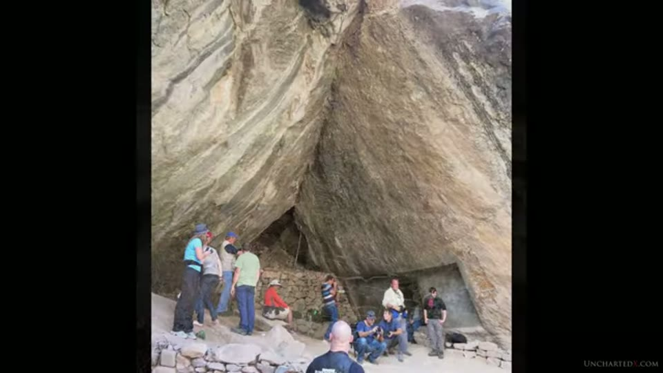
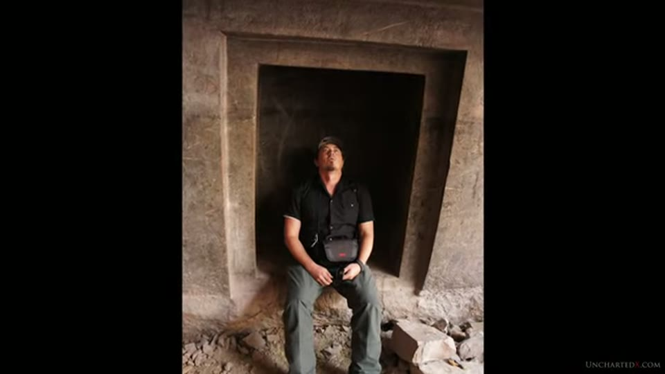
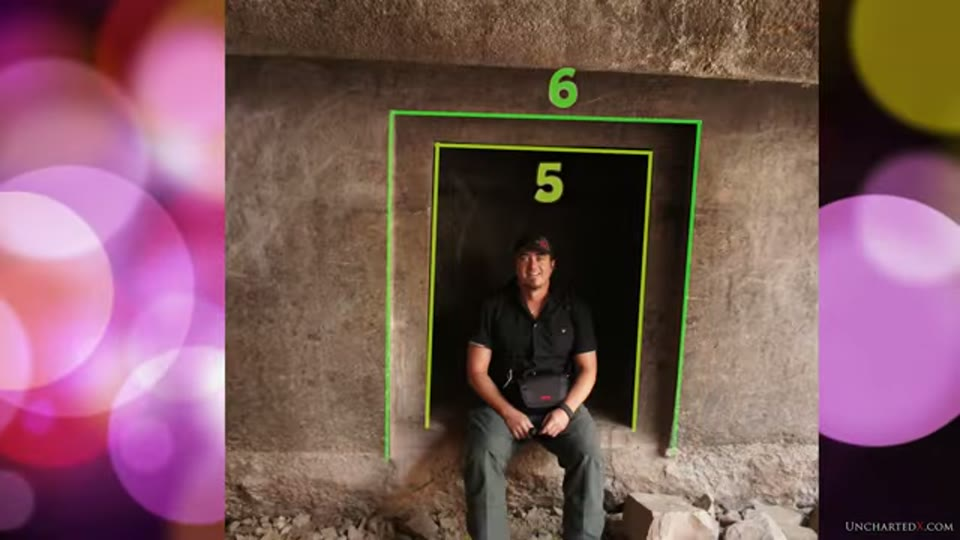
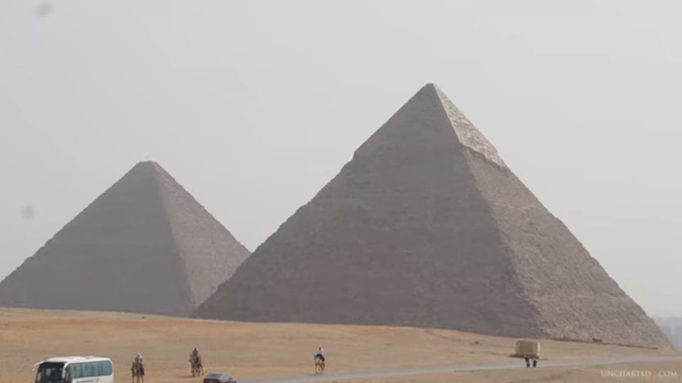
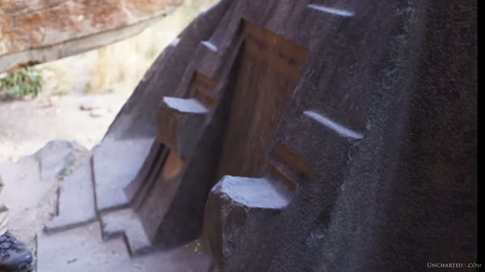
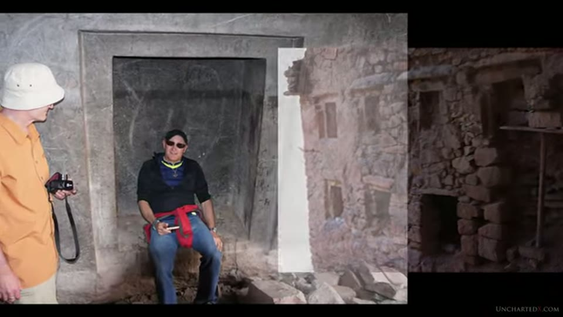

UnchartedX
Megalithic Mysteries: Peru's strange precision granite cave in the Andes!
Ben · 41 min · watch on YouTube · summarised 2026-09-30
A single small site carries the whole argument here. Ñaupa Huaca, also called Ñaupa Iglesia, is an artificial cave cut into a blue-stone outcrop halfway up a mountainside in a valley off the main axis of the Sacred Valley, relatively close to Ollantaytambo 00:48–01:25. There are no vendors, no parking and no infrastructure: a dirt road, narrow bridges, a walk up a railway line beside a river, a few hundred stairs of Inca terracing and a traverse across the mountainside 04:49–05:25.
Ben states the frame at the start rather than arriving at it: the workmanship "cannot be reasonably attributed to what we know of the Inca, who are the people and civilization credited with manufacturing this cave", and "we also cannot attribute it to any of the other known civilizations or cultures that have inhabited this region prior to or after the Inca" 01:25–01:58. He immediately qualifies the second half: "the statement really isn't saying much, as prior to the Inca we barely have any real information at all about the true history of this region" 01:58–02:11.
The classification the whole video runs on is not set out here. He refers the viewer to his own architecture-styles video from five months earlier and says it is "like a 101 or an intro for how to look at these sites", "probably worth watching before watching the rest of this video" 03:22–04:38. The summary of it he gives in passing is the layering claim: the massive precise work is always in the central core and the deepest and oldest layers, with primitive dry-stone or mud-mortared walling on top of it, and both attributed to the same people in the same period.
The stone, and what is claimed for it
The outcrop is described as "the only outcropping of blue stone anywhere on the surrounding mountain sides, which are all formed of sandstone" and contrastingly different in colour 05:43–06:03. Ben calls it a form of granite, with a high quartz content, and then makes three statements in one breath: that it "has piezoelectric properties", that "the stone is reported as being magnetic as well", and that "blue stone is a type of stone that's used in some of the earliest parts of Stonehenge" 06:03–06:20.
None of the three is sourced, and no instrument, sample or analysis appears at any point in the video. The word reported is his own.

The setting: an artificial cave cut into an outcrop halfway up a mountainside.
The cave itself, he says, likely once ran much further back into the mountain, and has suffered several cave-ins; he tried to get as far back as he could 06:20–06:36.
The portal, and the article the measurements come from
The main feature is a deep rectangular recess cut into the right-hand wall of the cave — "a portal or an indentation into the wall itself", with flat surfaces, precision angles and square corners carved directly into the granite 06:36–06:58. His own comparison for it is the Serapeum boxes at Saqqara: the same kind of precision wrought into very hard stone, requiring specific tools and techniques 07:04–07:20.

The carved recess that every measurement in the video is about.
Everything numerical that follows is quoted, not measured. Ben reads a passage from an article by Freddy Silva on the website Ancient Origins 07:20–09:00:
"The measurements of the main portal of Ñaupa Huaca are not random, they conform to musical notation. The length to height ratio is 3:1, making a perfect fifth in the second octave; the ratio of the alcove is 5:6, which is a minor third. The 5:6 ratio is both unusual and filled with specialist information. It perfectly describes the movement of the Earth, whose pole completes one full rotation of its axis every 25,920 years, while the plane of the equator tilts four degrees every 21,000 years — a ratio of 5:6. This accurate calculation of the motion of the planet is also encoded in another unusual temple, the Bent Pyramid of Egypt, whose slope angles encode the same ratio."
And then, for the ceiling:
"Dominating the unique environment of Ñaupa Huaca is the cave ceiling. It has been expertly sliced like butter… and smoothed with laser-like precision to create two different yet specific angles, 60 degrees and 52 degrees. There is only one other place on earth where these two numbers appear side by side: the slope angles of the two major pyramids at Giza."
The article is shown on screen as a browser window, and the page says more than the narration reads out. Its title is "Naupa Iglesia: An Egyptian Portal in the Andes?" — a framing the narration never mentions. The byline and the photograph credit both print Freddy Silva, so the author's name here is read off the screen rather than reconstructed from the audio. The section the quotation comes from is headed "Musical Measurements". And where the caption track renders the spoken altitude as "1,900 feet", the printed sentence on the page gives a figure in the nine thousands of feet.


That the ratio and angle claims are quoted from a third-party article, not measured on site.
The 5:6 ratio is the one thing in the sequence the video illustrates: a photograph of a man seated in the portal, with two green rectangles drawn over it and labelled 6 for the outer alcove and 5 for the inner opening 08:00–08:15. The 3:1 portal ratio, the 60-degree and 52-degree ceiling angles and the comparison with Giza are not drawn, marked or measured on screen. The Giza comparison runs over a photograph of Khufu and Khafre from the road; the Bent Pyramid appears as a stock photograph inside the article page itself, carrying a Creative Commons credit.

The 5:6 ratio, as the video illustrates it.

What appears on screen under the claim about the 60- and 52-degree angles.
The broken sculpture
The second feature is a carving at the cave mouth, also cut from the living rock: a symmetrical stepped shape flanked by two large flat-walled recesses, with brackets and ledges standing proud of the faces 09:00–09:20. Ben's account of its condition is short and unhedged: it "was suspiciously intact when the Spanish rolled through this region, and they thoroughly investigated it for hidden treasure by smashing it to pieces, as they did to much of the megalithic work in Peru". What survives, he says, survives because "busting up granite is hard work" 09:20–09:42.


The carving at the cave mouth, and its condition.
Did the Inca make it, or inherit it
This is the question the video is built around, and it is put as a question 10:52–11:12: "What do you think is more likely — did the Inca create this cave and make these carvings into the granite, or did they inherit it and then use the site, adopt it into their culture?"
The accepted position is given in one line, as "the Inca did it". What Ben sets against it is the Inca toolkit as he describes it — some bronze and copper, "perhaps even some meteoric iron", but mostly stone tools and obsidian in place of metal blades, with metal used mainly ceremonially or decoratively — alongside "prolific" terracing and staircases that he attributes to the Inca without qualification and that are visible all around the site 09:42–10:52.
Brien Foerster carries the argument from here, in footage from an interview Ben and a friend filmed in Cusco in 2015 11:12–18:25. Ben introduces him as a friend whose work he recommends. Foerster's case has four parts:
- Recycling, not quarrying. "The Inca's role was to build buildings out of what was available, so they recycled some of the damaged structures from the early megalithic builders." What he finds intriguing is the restraint: they "seemingly would never touch any of the surfaces and remove something", but anything already on the ground was reused.
- The single-quarry rule. The megalithic builders needed stone with high quartz or iron content, and "any structure could only be constructed out of stone from one quarry. They never mix the stone." He gives distances by pointing — basalt from a quarry 50 km away, limestone from 10 to 15 km — and calls the requirement "almost science fiction" 13:53–14:45.
- Arriving at an abandoned city. The Inca, pushed out of the Lake Titicaca region by the Aymara about a thousand years ago, followed an existing road north, met a megalithic wall with a gate in it an hour short of Cusco, followed it, and found "an abandoned city that was megalithic" 15:12–16:30.
- The succession of palaces. Each high Inca in succession had to have his own residence, so each rebuilt one of the megalithic ruins — Manco Cápac taking San Cristóbal on the hill. "By the time you get to the eighth high Inca there were no more megalithic ruins to be restored," so the ninth, tenth and eleventh built from scratch, "and what we see there is they're all made of little blocks or adobe, no megalithic work." His conclusion: if the Inca built the megalithic work, "it meant they'd have had profound capability in the beginning and slid downhill for the next 500 years" 16:30–18:25.
That last argument appears in three other entries with two different sets of numbers. Here and in the Machu Picchu part two entry the count is twelve rulers with the break after the eighth; in the Sacsayhuamán part one entry Foerster gives eleven high Inca and the break after the seventh, over a civilisation "barely three hundred years old" rather than the 500 years given here. The San Cristóbal footage is the same 2015 interview, cut differently.

The source of the inheritance argument, and the two kinds of walling behind him.
Homage as evidence
Ben's own contribution to the inheritance argument is architectural rather than historical. At Ñaupa Huaca, directly opposite the carved portal, stands a wall of mud-brick and loosely mortared rock, which he reads as "respectful imitation" — homage paid by a later culture to work it did not make 12:50–13:16. The video composites the two together in one frame, the portal on the left and the rough wall on the right.

That a wall of loose rubble stands directly opposite the carved portal.
He offers a second instance: the Sillustani towers near Lake Titicaca, where megalithic stone is reused in the cruder towers and repairs have been made to the finer ones 13:17–13:40. The same reuse, he says, was carried on by the colonial Spanish. This is the same pairing that the architecture-styles entry uses as its illustration of the latest style revering the earliest.

The second instance of the same reuse, offered as corroboration.
His summary of what the site is for: "This small cave contains perhaps one of the very best examples anywhere in Peru that there were at least two civilizations at work here, perhaps more, and that the older civilization was far more advanced in technological capability than the Inca to whom all of this work is attributed in mainstream history" 14:45–15:12.
The guide, the shapes, and Ben's own reservation
A long section hands the site over to other people 18:25–27:10. Ben flags it as a departure: "this is a slight departure from the usual analytical nature of my work." He describes the palpable energy visitors report, admits to it himself — "it does give you goosebumps when you go there" — notes he has felt the same in Egypt, and cites Chris Dunn remarking on it after his first trip there, "and he's about as analytical as you can get". He names a discussion between Brien Foerster and a Cusco-based researcher and anthropologist on Foerster's channel, in a video called Peru's Cave of Dangerous Energies.
The 2013 trip he keeps returning to was made with Brien Foerster and Graham Hancock, with a local guide and a shaman travelling with the group 21:26–21:40; he also names Matt from Ancient Architects and Foerster as people who have looked into the symbolic side of the megalithic work 24:59–25:07.
The guide from that trip then explains the chakana — the stepped cross, the three levels of the world, each with its animal: the snake below, the puma at the level we live on, the condor above — at Ollantaytambo and then at Ñaupa Huaca itself, where he reads a puma's head into the broken sculpture, pointing out an eye, an ear and a mouth 21:40–27:10.
The video carries burned-in subtitles over the guide's speech, and over Foerster's, which is the only reliable record of either: the auto-caption track mangles both. From the picture rather than the audio track, at the Wall of Six Monoliths at Ollantaytambo: "So that's why, in the next stone you see kind of the parts of the bodies. Pumas. Just probably the Spanish they carved the heads, the heads part." And: "The point is, that this temple, it wasn't finished." At Ñaupa Huaca: "The little corners, always 3, that was part of the ear. It's missing of course, you can see clearly."
Ben then puts his own reservation on the whole section, before the Younger Dryas material and in his own voice 24:24–24:38:
"In my mind you do need a slight pinch of salt to see the symbolic nature of the ancient work here. You kind of have to be looking for the shapes in order to recognise them."
Three months later, in the Sacsayhuamán part one entry, he takes the same position further and refuses to see a puma his guide points out in the Ollantaytambo megaliths — the same guide, at the same wall.

The guide reading animal shapes into the megalithic work.
The thought exercise
The last third leaves the site 27:54–34:10. The argument, in order: South American history before the Inca is thinly known, and Caral near Lima has pyramids around 5,000 years old, at least 4,000 years before the Inca reached the highlands; new evidence puts humans in the Americas much earlier than previously thought, with DNA linkages between South America and Australasia; and the Younger Dryas cataclysm of around 12,800 years ago devastated the region — in his figures, about 80% of large mammals extinct, plant life down tenfold for a decade, 10% of the planet's biomass burned, sea levels rising to drown some 10 million square miles of continental shelf.
He then asks the reader to assume a megalithic culture existed somewhere in the 50,000-to-13,000 years ago range, alongside the known Neolithic hunter-gatherers, and to ask what would survive such an event plus another ten or fifteen thousand years. His answer: stonework in places that escaped, and myth. The tools would be gone — "and that is only if they were even left there on the jobsite in the first place. Tools are expensive after all, they're valuable. How many contractors do you know that leave all their gear behind when they do a job?"
He marks the whole section as speculation while he is delivering it 33:21–33:40:
"Now this is just a thought exercise. I can't claim any of this to be an impervious truth really, any more than the academics can declare it to be truth for our orthodox story of history. Both what I'm saying and what they say are just really the interpretation of an incomplete set of evidence."
The one thing he does put forward as settled is the event itself: "what is impervious truth, however, is that the Younger Dryas cataclysm happened… whether you think it was a cosmic impact, a coronal mass ejection, a supernova, the electric universe theory or anything else." The source he points to for the evidence is his own podcast episode on a Comet Research Group paper published in Nature; the thumbnail for that episode is what appears on screen. No chart, map, core, spherule or page of the paper is shown. The entire cataclysm section runs over footage of Peruvian walls.
Who should be asked
The video closes on a question about expertise 34:10–35:40: whether stone carving and engineering are archaeological questions "for the people that study art, symbolic meaning and language", or technical questions "for the people who actually do such work — the engineers, the stonemasons, the construction experts".
Foerster answers it at length and the register changes sharply 35:40–38:15. Science, he says, is not the open pursuit of knowledge people believe it to be but "a little boys and girls club where they protect each other"; he describes quitting a Canadian government job after six months, "appalled at how unprofessional it is"; and he argues the internet has ended the gatekeeping — "we don't have to go in front of you to be peer-reviewed any more, because this information belongs to 7 billion people on this planet." Between those passages the caption track drops out entirely and only the burned-in subtitles carry him, including the line "Are we at a tipping point?"
The video this one set in motion
The outro is not padding 38:20–41:10. Ben says he wanted a break from Egypt, realised how much unused Peru footage he had, and decided to make a series of it. He then reads out an email from a supporter named Frank asking him to go to Puma Punku and Tiwanaku and do an in-depth evaluation from his own perspective, accompanied by a $250 donation. His answer on camera: he has four days of footage from two visits, almost none of it used, and "I'm absolutely going to do that evaluation and it's going to be one of the episodes in this series. So I'm definitely going to look into things like geopolymers."
That episode is the Puma Punku and Tiwanaku entry, published three weeks later, which opens by setting out a multi-part series and does leave the geopolymer question open.
What you can check yourself
- The site. Ñaupa Huaca is reachable, and the portal, the ceiling and the broken sculpture are all photographable. The claimed 3:1 and 5:6 ratios and the 60-degree and 52-degree ceiling angles are measurable by anyone standing in the cave with a tape and an inclinometer.
- The article. The source of every numerical claim in the first third is named on screen, with its title, its author and its URL legible. It can be read in full.
- The figures quoted from it — 25,920 years for the precession cycle, four degrees of tilt every 21,000 years, the slope angles of the Bent Pyramid and of the two major Giza pyramids, and the altitude of the site — are all published numbers that can be looked up.
- The stone. Whether the outcrop is granite, whether it is the only such outcrop on the surrounding hillsides, and whether the surrounding rock is sandstone are geological questions with published answers.
- The wall opposite the portal. The contrast the homage argument rests on is a thing anyone can photograph in a single frame, as the video does.
- Caral. Its excavated dates are published.
- Sillustani. The reuse of finer stone in cruder towers is visible in the video and on site.
What the video does not settle
- Nothing at the cave is measured. Every dimension, ratio and angle in the entry is read out from someone else's article. No tape, gauge, level, inclinometer or scan appears in the video, and the article's own method for arriving at the figures is not discussed.
- The one illustrated ratio is an overlay, not a measurement. The green 5 and 6 rectangles are drawn on a photograph taken at an angle, by hand, without a scale in frame.
- The 60-degree and 52-degree ceiling angles are never shown. They are stated over footage, and the accompanying image for the Giza comparison is a distant photograph of two pyramids.
- The claims about the stone are unsupported in the video. Piezoelectricity is asserted, magnetism is given as reported, and the Stonehenge comparison is made by shared name. No sample, measurement, instrument or reference appears.
- The Spanish destruction of the sculpture is asserted, not evidenced. No account, excavation report or dated photograph is cited; the damage itself is what is shown.
- Foerster's single-quarry rule is asserted, not demonstrated. No survey, count, list of structures or petrological result accompanies it, and the quarry distances are given by pointing. The same claim is recorded, with the same absence of supporting work, in the Machu Picchu entry.
- The succession-of-palaces argument depends on a ruler count and an ordering that the video does not source, and that the channel itself gives two ways across four entries.
- The Younger Dryas section shows no evidence of its own. The peer-reviewed paper is named but not displayed; what appears on screen is the thumbnail of the presenter's own podcast episode, and the footage underneath is of Peru.
- The dating of the cave is never attempted. No stratigraphy, no excavation, no radiocarbon, no relative sequence beyond the visual layering argument, and no upper or lower bound is proposed for when the portal was cut.
- The guide's puma is not visible in the frames that accompany it. The shot running under his description of the eye, ear and mouth is almost entirely in shadow.
Names reconstructed from the caption track
This is a 2019 upload with an unpunctuated auto-caption track, and it mangles nearly every proper noun. Twelve reconstructions:
| written here | as the captions give it |
|---|---|
| Ñaupa Huaca, Ñaupa Iglesia | "Napa Wacha", "Napa inglesia", "napa Hakka", "Nepal oka", "Napa Walker", "Navajo Walker" |
| Brien Foerster | "Brian Forrester", "Bryan Forester" |
| Freddy Silva | "Freddy silver" |
| Ollantaytambo | "Alanta Tambo", "orient a Tambo" |
| Sacsayhuamán | "saqsaywaman", "sucks a woman" |
| the Serapeum of Saqqara | "the therapy of Saqqara" |
| Caral | "Corral" |
| Manco Cápac | "manco capac", "Monaco copic", "Mong Kok at bucks palette" |
| San Cristóbal | "san cristobel", "san cristobol" |
| chakana | "Chicana", "Chicano" |
| panaca | "pinaka" |
| Uku Pacha, Kay Pacha, Hanan Pacha | "kuku pata hai pata Hannam bottom" |
Three names were not recovered and are left out of the body rather than guessed at. The megalithic gate an hour from Cusco that Foerster says the Inca encountered is given as "the ante punku" and is not identified. The guide from the 2013 trip is rendered "raha Leo" and "Roja Leo"; the same person appears in three other entries as "relly oh", "rehalia" and "Roy Elio", and no video has yet put his name on screen. The Cusco-based researcher in the Foerster video is given as "Te'o peratis".
Two things are not reconstructions and were read off the screen. Freddy Silva's name and the title of his article come from the browser window. So do the guide's and Foerster's quoted sentences, which are burned into the picture as subtitles.
The editor's own on-screen location captions carry two misspellings: Sillustani appears as "Silllustani" and Caral as "Carral".